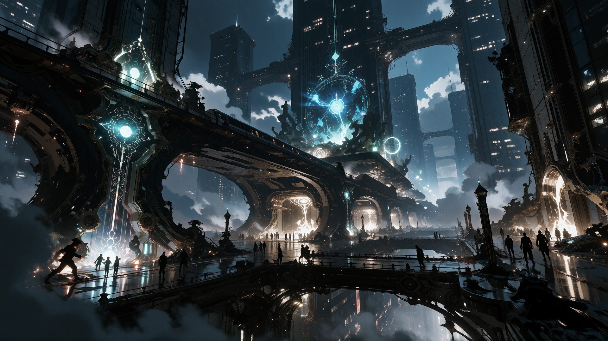

The corporate and financial center of Terminal 00. Dominated by enormous skyscrapers, corporate headquarters, research facilities, luxury commercial centers, financial institutions, and private security infrastructure. Megacorporations possess significant economic and political influence. Corporate corruption tends to be hidden behind contracts, bureaucracy, and private agreements.
Corporate power, technological progress, wealth, and respectable corruption.